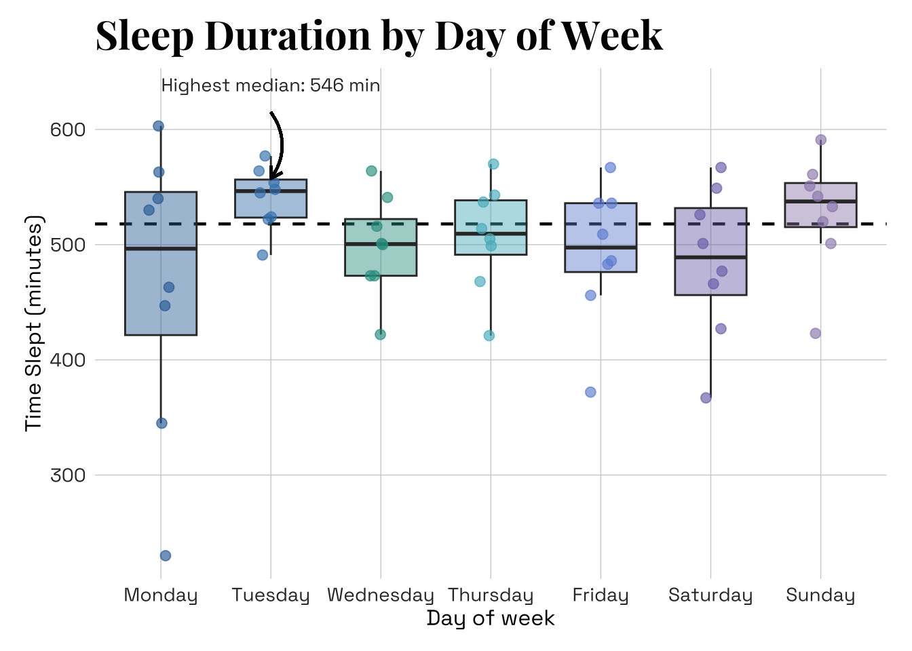
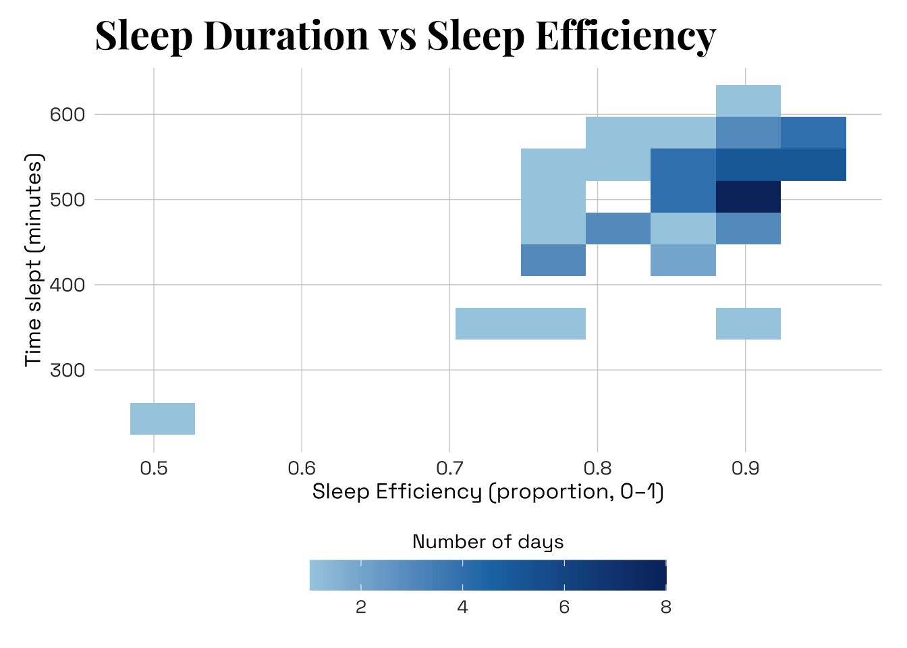
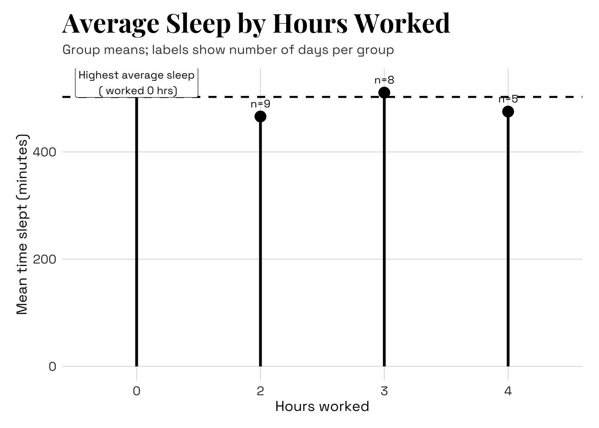

library(tidyverse) # loads in tidyverse package
library(janitor) # loads in janitor package
library(lubridate) # loads in lubridate package
library(here) # loads in here package
library(scales) # loads in scales package
library(showtext) # loads in showtext package
library(sysfonts) # loads in sysfonts package
library(ggtext) # loads in ggtext package
library(ggplot2) # loads in ggplot2 package
library(fontawesome) # loads in fontawesome package
# Stores my personal data as an object called my_data
raw_data <- read.csv(here('data',"193DS data - stress (4).csv")) Advanced Data Visualization
Set up Chunk
Cleaning data
# Create a cleaned version of the raw dataset
cleaned_data <- raw_data |>
# Standardize column names:converts all column names to lowercase with underscores
clean_names() |>
mutate(
# Convert date column from character (mm/dd/yyyy) to proper Date format
date = mdy(date_mm_dd_yyyy),
# Convert day_of_week into an ordered factor
day_of_week = factor(day_of_week,
levels = c("Monday",
"Tuesday",
"Wednesday",
"Thursday",
"Friday",
"Saturday",
"Sunday")),
# Convert sleep efficiency from % style character to numeric proportion
sleep_efficiency = parse_number(as.character(sleep_efficiency)) / 100,
# Convert Pilates variable to categorical factor
pilates = factor(pilates, levels = c("No","Yes")))Stores important info that changes as data set updates:
# Calculate the total number of observations (days recorded)
n_obs <- nrow(cleaned_data)
# Identify the earliest date in the dataset
min_date <- min(cleaned_data$date, na.rm = TRUE)
# Identify the most recent date in the dataset
max_date <- max(cleaned_data$date, na.rm = TRUE)Create base theme + aesthetics (xxx might change later)
# Loads custom fonts
# "Playfair Display" will be used for titles
# "Space Grotesk" will be used for axis labels and body text
font_add_google("Playfair Display", "playfair")
font_add_google("Space Grotesk", "space")
# Activate showtext so ggplot can render fonts
showtext_auto()
# Create a reusable base theme for all plots
base_theme <- theme_minimal(base_family = "dm") +
theme(
# Main title styling
plot.title = (element_text(face = "bold", size = 16)),
# Subtitle styling
plot.subtitle = element_text(size = 11),
# Axis title styling
axis.title = element_text(size = 11),
# Axis tick label styling
axis.text = element_text(size = 10),
# Legend title styling
legend.title = element_text(size = 10),
# Legend text styling
legend.text = element_text(size = 9))Plot 1: Boxplot + jitter (Sleep by day of week)
# Compute overall median sleep duration across all days (for reference line)
overall_median_sleep <- median(
cleaned_data$time_slept_minutes, # numeric vector of sleep minutes
na.rm = TRUE) # ignore missing values
# Define a custom color palette for each day of the week
week_colors <- c(
"Monday" = "darkgoldenrod1",
"Tuesday" = "mediumvioletred",
"Wednesday" = "darkolivegreen",
"Thursday" = "cyan4",
"Friday" = "indianred",
"Saturday" = "darkorange2",
"Sunday" = "lightblue")
# Compute median sleep for each day of the week
med_by_day <- cleaned_data |> # uses cleaned data
group_by(day_of_week) |> # group observations by weekday
summarize(med_sleep = median(time_slept_minutes, # compute median sleep within each day
na.rm = TRUE), # remove missing values if any
.groups = "drop") # ungroups df
# Identify the day with the highest median sleep
highlight_day <- med_by_day |>
slice_max(med_sleep, n = 1) |> # select row with maximum median sleep
pull(day_of_week) |> # extract just the weekday value
as.character() # convert to character
# Build the boxplot visualization
p1_box <-
ggplot(
cleaned_data, # uses cleaned data
aes(x = day_of_week, # x axis is categorical predictor (weekday)
y = time_slept_minutes)) + # y axis is response variable (sleep duration)
geom_hline( # Add horizontal line at overall median sleep
yintercept = overall_median_sleep, # location of reference line at median
linetype = "dashed", # styles line as dashed
linewidth = 0.8) + # sets thickness of line
geom_boxplot( # Draw boxplots for each day
aes(fill = day_of_week), # colors boxes by weekday
width = 0.65, # sets width of boxes
alpha = 0.45, # sets transparency level of boxes
outlier.shape = NA) + # suppress default outlier points
geom_jitter( # Add jittered points to show individual observations
aes(color = day_of_week), # colors points by weekday
width = 0.12, # sets horizontal jitter
height = 0, # no vertical jitter
alpha = 0.6, # sets transparency level
size = 2) + # sets point size
scale_fill_manual(values = week_colors) + # Apply manual fill color scale
scale_color_manual(values = week_colors, # Apply manual fill color scale
guide = "none") + # remove duplicate legend
labs(
title = "Sleep Duration by Day of Week", # sets plot title
x = "Day of week", # sets x-axis title
y = "Time Slept (minutes)") + # sets y-axis title
base_theme + # uses preset base theme
theme(axis.text.x = element_text(angle = 35, hjust = 1)) + # Rotate x-axis labels
# Add curved arrow annotation highlighting highest median day
geom_curve(
data = NULL, # uses plot-level data
aes(x = highlight_day , # sets arrow starting x-position
# sets arrow starting y-position
y = max(cleaned_data$time_slept_minutes, na.rm = TRUE) * 1.01,
xend = highlight_day , # sets arrow ending x-position
# sets arrow ending y-position
yend = med_by_day$med_sleep[med_by_day$day_of_week == highlight_day] * 1.05),
curvature = -0.35, # sets degree of curve
arrow = arrow(length = unit(0.1, "inches")), # sets arrowhead size
inherit.aes = FALSE) + # prevents inheriting global aesthetics
annotate( "text", # Add text label describing highlighted day
x = highlight_day,
# sets vertical position of label
y = max(cleaned_data$time_slept_minutes, na.rm = TRUE) * 1.03,
# creates content of label
label = paste0("Highest median: ", highlight_day),
vjust = 0, # sets vertical alignment
size = 3.5, # sets text size of label
family = "dm") # sets font family of label
p1_box # shows plot 1
# saves plot 1 with specifications
ggsave("plot1_sleep_by_day.png", p1_box, width = 9, height = 5, dpi = 300)Plot 2: Scatter + Bins (Sleep duration vs efficiency)
p2_sleep_scatter <-
ggplot(cleaned_data, # uses cleaned data
aes(x = sleep_efficiency, # x-axis is continuous predictor (weekday)
y = time_slept_minutes)) + # y-axis is response (sleep duration)
geom_bin2d(bins = 9) + # Create rectangular bins instead of individual points
scale_fill_gradient( # Define the color gradient for bin counts
name = "Number of days", # sets legend title
low = "green", # color for bins with fewer observations
high = "darkblue") + # color for bins with more observations
labs(
title = "Sleep Duration vs Efficiency Scatter with Bins", # sets plot title
x = "Sleep Efficiency (range 0-1)", # sets x-axis title
y = "Time slept (minutes)") + # sets y-axis title
base_theme # uses preset base theme
p2_sleep_scatter # shows plot 2
# saves plot 2 with specifications
ggsave("plot2_duration_vs_efficiency.png", p2_sleep_scatter, width = 7.5, height = 5, dpi = 300)Plot 3: Calendar-style heatmap (Daily sleep over time)
# Create variables needed for a calendar grid layout
cleaned_data_cal <- cleaned_data |>
# set order Monday–Sunday so heatmap rows display chronologically
mutate(weekday = factor(wday(date, label = TRUE, abbr = FALSE),
levels = c("Monday",
"Tuesday",
"Wednesday",
"Thursday",
"Friday",
"Saturday",
"Sunday")),,
# Create a week index variable
week = floor_date(date, unit = "week", week_start = 1))
p3_calendar <-
ggplot(cleaned_data_cal, # uses cleaned data with added variables
aes(x = week, # column position = week grouping
y = weekday, # row position = day of week
fill = time_slept_minutes)) + # tile color hue by sleep duration
geom_tile( # Draw rectangular tiles for each date
color = "white", # makes white borders between tiles
linewidth = 0.6) + # sets thickness of tile borders
scale_x_date(date_labels = "%b %d") + # display axis format like "Jan 09"
scale_fill_gradient( # Define color gradient for sleep duration
name = "Sleep Duration (min)", # sets legend title
low = "red", # sets color for low sleep duration days
high = "green") + # sets color for high sleep duration days
labs(
title = "Sleep Calendar (Daily Heatmap)", # sets title
x = "Week (starting Monday)", # sets x-axis title
y = "") + # no title for y-axis
base_theme + # uses preset base theme
theme(
axis.text.x = element_text(angle = 30, hjust = 1), # rotate week labels
panel.grid = element_blank()) # Remove background grid lines
p3_calendar # shows plot 3
# saves plot 3 with specifications
ggsave("plot3_calendar_heatmap.png", p3_calendar, width = 10, height = 4.8, dpi = 300)Plot 4: Bubble scatter (Steps vs sleep duration; size = sleep efficiency, color = time stressed)
p4_bubble <-
ggplot(cleaned_data, # uses cleaned data
aes(x = number_of_steps, # x-axis is # of steps
y = time_slept_minutes)) + # y-axis is response (sleep duration)
geom_point(aes(size = sleep_efficiency, # point size determined by sleep efficiency
color = time_stressed_min), # points colored by time stressed
alpha = 0.5) + # makes point semi-transparent
scale_x_continuous(labels = comma) + # formats x-axis with commas
scale_color_gradient(low = "#FEE5D9", # sets low stress days to light red
high = "#A50F15", # sets high stress days to dark red
name = "Time Stressed (min)") + # names color legend
scale_size_continuous(name = "Sleep Efficiency", # names size legend
labels = percent_format(accuracy = 1), # formats efficiency as percentage
limits = range(cleaned_data$sleep_efficiency), # use actual data range for limits
range = c(1,7)) + # sets range for point sizes
labs(title = "Steps vs Sleep (Sized by Time Stressed)", # sets title
x = "Steps", # sets x-axis title
y = "Time stressed (minutes)") + # sets y-axis title
base_theme # uses base theme
p4_bubble # shows plot 4
# saves plot 4 with specifications
ggsave("plot4_steps_stress_efficiency.png", p4_bubble, width = 7.5, height = 5, dpi = 300)Plot 5: Lollipop chart (Mean sleep by hours worked)
# Summary by hours worked
cleaned_data_work_summary <- cleaned_data |> # uses cleaned data
group_by(hours_worked) |> # groups observations by hours worked
summarise(mean_sleep = mean(time_slept_minutes), # compute mean sleep per group
n_days = n(), # counts number of days in each group
.groups = "drop") # ungroups df
overall_mean_sleep <- mean(cleaned_data$time_slept_minutes) # finds overall mean
highlight_work <- cleaned_data_work_summary |> # uses summary by hours worked
slice_max(mean_sleep, n = 1) # selects row with highest mean_sleep
p5_lollipop <-
ggplot(cleaned_data_work_summary, # uses summary by hours worked
aes(x = factor(hours_worked), # converts to factor for categorical x-axis
y = mean_sleep)) + # y-axis shows group mean sleep
geom_hline( # add dashed horizontal line showing overall mean sleep
yintercept = overall_mean_sleep, # sets line at overall mean
linetype = "dashed", # sets line type to dashed
linewidth = 0.8) + # sets line width
geom_segment( # adds vertical lollipop stems from 400 up to group mean
aes(xend = factor(hours_worked), # keeps same x-position as point
y = 400, # line starts at 400 min
yend = mean_sleep), # line ends at mean for the group
linewidth = 1.1) + # sets line width
geom_point(size = 4) + # sets size of points (at mean for group)
geom_text(
aes(label = paste0("n=", n_days)), # labels each point would # obs in group
vjust = -1.2, # positions label
size = 3.3) + # sets size of label
geom_label(data = highlight_work, #adds label highlighting highest mean
aes(x = as.numeric(factor(hours_worked)), # sets x-axis position
y = mean_sleep + 15, # sets y-axis position
# writes label text
label = paste0("Highest average sleep\n(", hours_worked, " hrs)")),
size = 3.3, # sets text size
label.size = 0.2, # sets border sizze
inherit.aes = FALSE) + # prevents inheriting global aesthetics
labs(
title = "Average Sleep Duration by Hours Worked", # sets title
subtitle = "Group means; labels show number of days per group", # sets subtitle
x = "Hours worked", # sets x-axis title
y = "Mean time slept (minutes)") + # sets y-axis title
base_theme # uses base theme
p5_lollipop # shows plot 5
# saves plot 5 with specifications
ggsave("plot5_lollipop_hours_worked.png", p5_lollipop, width = 7.5, height = 5, dpi = 300)